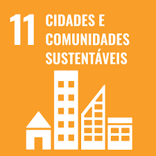
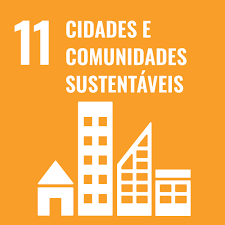
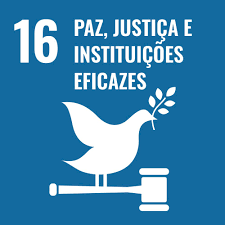
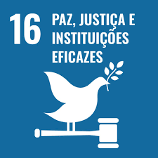

COMO A ONU SURGIU?
A criação da Organização das Nações Unidas (ONU) se deu em 24 de outubro de 1945, na cidade de São Francisco, EUA, como resultado das conferências de paz realizadas no final da Segunda Guerra Mundial. Assinaram inicialmente a Carta das Nações Unidas 50 países, excluindo os que haviam feito parte do Eixo. A ONU era uma segunda tentativa de criar uma união de nações com o propósito de estabelecer relações amistosas entre os países. A primeira tentativa ocorreu com a formação da Liga das Nações, ao fim da Primeira Guerra Mundial, mas que fracassou em seus objetivos. A Carta afirmava em seu preâmbulo que “Nós, os povos das Nações Unidas, decididos: a preservar as gerações vindouras do flagelo da guerra que por duas vezes, no espaço de uma vida humana, trouxe sofrimentos indizíveis à humanidade; a reafirmar a nossa fé nos direitos fundamentais do homem, na dignidade e no valor da pessoa humana, na igualdade de direitos dos homens e das mulheres, assim como das nações, grandes e pequenas”, tendo como primeiro objetivo “Manter a paz e a segurança internacionais e para esse fim: tomar medidas coletivas eficazes para prevenir e afastar ameaças à paz e reprimir os atos de agressão, ou outra qualquer ruptura da paz e chegar, por meios pacíficos, e em conformidade com os princípios da justiça e do direito internacional, a um ajustamento ou solução das controvérsias ou situações internacionais que possam levar a uma perturbação da paz”.
A organização se estruturava dessa forma para evitar uma nova deflagração de conflitos mundiais, como as duas Guerras anteriores, criando condições para que isso se efetivasse, superando um objetivo apenas de controle militar e englobando a criação de instâncias responsáveis por garantir os direitos principais dos seres humanos. Inicialmente foram criados cinco órgãos fundamentais: a Assembleia Geral, composta por todos os países-membros; o Conselho de Segurança, formado por cinco membros permanentes (URSS, EUA, Inglaterra, França e China) e mais dez membros provisórios eleitos pela Assembleia Geral; o Secretariado, presidido pelo Secretário-Geral e com a atribuição de administrar e organizar a instituição; o Conselho Econômico e Social, ao qual estão ligados diversos órgãos, como a Unicef (Fundo das Nações Unidas para a Infância) e a OMC (Organização Mundial do Comércio); e a Corte Internacional de Justiça, órgão jurídico da ONU com sede em Haia, na Holanda. Apesar de sua pretensão de participação igual dos países, a ONU deu um peso maior às potências militares saídas da II Guerra Mundial, principalmente os EUA e a URSS, em virtude de seu papel principal exercido pelo Conselho de Segurança na resolução de conflitos militares. Ao longo da história, a ONU colecionou ainda uma série de reveses na mediação de desentendimentos entre países, mas, por outro lado, exerceu relevante papel através da Unicef, garantindo uma melhora de vida para parte das crianças que vivem em situação de miséria.
OS OBJETIVOS DE DESENVOLVIMENTO SUSTENTÁVEL.
 


 

Os temas podem ser divididos em quatro dimensões principais:
Social: relacionada às necessidades humanas, de saúde, educação, melhoria da qualidade de vida e justiça.
Ambiental: trata da preservação e conservação do meio ambiente, com ações que vão da reversão do desmatamento,
proteção das florestas e da biodiversidade, combate à desertificação, uso sustentável dos oceanos e recursos marinhos até a adoção
de medidas efetivas contra mudanças climáticas.
Econômica: aborda o uso e o esgotamento dos recursos naturais, a produção de resíduos, o consumo de energia,
entre outros.
Institucional: diz respeito às capacidades de colocar em prática os ODS.
Os ODS foram construídos em um processo de negociação mundial, que teve início em 2013 e contou com a participação do Brasil em
suas discussões e definições a respeito desta agenda. O país tendo se posicionado de forma firme em favor de contemplar a
erradicação da pobreza como prioridade entre as iniciativas voltadas ao desenvolvimento sustentável.
A CRIAÇÃO DOS OBJETIVOS DE DESENVOLVIMENTO SUSTENTÁVEL.
Os ODS são resultado de um acúmulo de experiências, debates e negociações globais. No fim da Guerra Fria, quando as agências oficiais de assistência ao desenvolvimento tiveram cortes em seu orçamento – e os países que precisavam da cooperação sofreram os efeitos da diminuição dos recursos –, a ONU e a Organização para a Cooperação e Desenvolvimento Econômico (OCDE) passaram a discutir metas de bem-estar econômico, desenvolvimento social e sustentabilidade, conforme apontam Paulo Gonzaga Mibielli de Carvalho e Frederico Cavadas Barcellos, no artigo “Os Objetivos de Desenvolvimento doMilênio – ODM: Uma avaliação crítica”, da revista Sustentabilidade em Debate. O resultado foi a publicação do documento “Shaping the 21th Century: The Contribution of Development Cooperation” (“Moldando o Século 21: A Contribuição da Cooperação para o Desenvolvimento”, em tradução livre), (OECD, 1996), cuja redação consolidava discussões anteriores – como a da Rio 92. Paralelamente, discutia-se a própria teoria do desenvolvimento. Uma das principais referências foi o trabalho do Prêmio Nobel de Economia Amartya Sen, que também é um dos criadores do Índice de Desenvolvimento Humano (IDH). O conceito de desenvolvimento humano, diferentemente do de desenvolvimento econômico, é centrado na ampliação das oportunidades, das capacidades e do bem-estar das pessoas. A renda passa a ser apenas um dos aspectos do desenvolvimento, e não seu fim, conforme o Programa das Nações Unidas para o Desenvolvimento (Pnud).
Assim, em 1998, foi lançado o Índice de Desenvolvimento Humano (IDH), com três dimensões: renda, educação e saúde. O objetivo, na época,
era oferecer um contraponto ao indicador mais utilizado até então para a comparação entre Estados, o Produto Interno Bruto (PIB). Até
hoje, o IDH é uma referência mundial sintética que, apesar de suas qualidades, não esgota todos os aspectos do desenvolvimento. Já em
setembro de 2000, 189 nações firmaram um compromisso para combater a extrema pobreza e outros problemas sociais. Esse pacto acabou
levando aos Objetivos de Desenvolvimento do Milênio (ODM), oito alvos a serem alcançados até 2015, subdivididos em 21 metas e 60 indicadores.
De 2000 a 2015, diversos eventos e relatórios acompanharam a situação dos ODM no mundo. Os ODS são ainda mais abrangentes e detalhados que os
ODM, incluindo temas transversais como pobreza, desigualdade, desenvolvimento econômico, clima, fortalecimento das instituições e segurança.